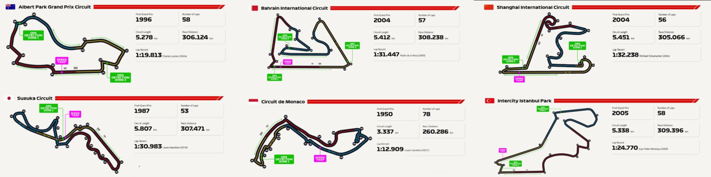

Pistler

🔧 Genel Özellikler:
- Uzunluk:
Çoğu pist 3,5 – 7 km arasında değişir. En uzun pist, Belçika'daki Spa-Francorchamps (7.004 km), en kısası ise Monako'dur (3.337 km).
- Tur Sayısı:
Toplam yarış mesafesi yaklaşık 305 km olacak şekilde tur sayısı belirlenir. Monako'da istisna olarak mesafe daha kısadır (260 km civarı).
- Yön:
Çoğu pist saat yönünde akar, fakat İstanbul Park, Singapur ve Brezilya Interlagos gibi bazı pistler saat yönünün tersinedir.
- Viraj Sayısı:
Pistlerin viraj sayısı 9 (Monza) ile 27 (Cidde, Suudi Arabistan) arasında değişebilir. Hem yüksek hızlı hem de teknik virajlar içerir.
- DRS Bölgeleri:
DRS (Drag Reduction System) düzlüğe denk gelen bölgelerde aktif olur. Genellikle her pistte 1 ila 3 arası DRS bölgesi bulunu
🌍 İklim ve Zemin:
- Zemin Kalitesi:
Asfalt kalitesi, kavrama seviyesini doğrudan etkiler. Yeni asfalt pistler daha kaygandır.
- Hava Koşulları:
F1 pistleri farklı iklim koşullarında yarışlara sahne olur (yağmurlu Spa, çöl sıcaklarındaki Bahreyn, nemli Singapur).
🏁 Pist Türleri:
- Sabit Yarış Pistleri:
Kalıcı olarak inşa edilmiştir (örneğin Silverstone, Suzuka).
- Şehir Pisti (Street Circuit):
Şehir yolları yarış için kapatılarak pist hâline getirilir. Monako, Bakü ve Singapur gibi pistler buna örnektir.
- Hibrit Pistler:
Sabit pist ile şehir pisti karışımıdır. (Örneğin, Melbourne - Albert Park).